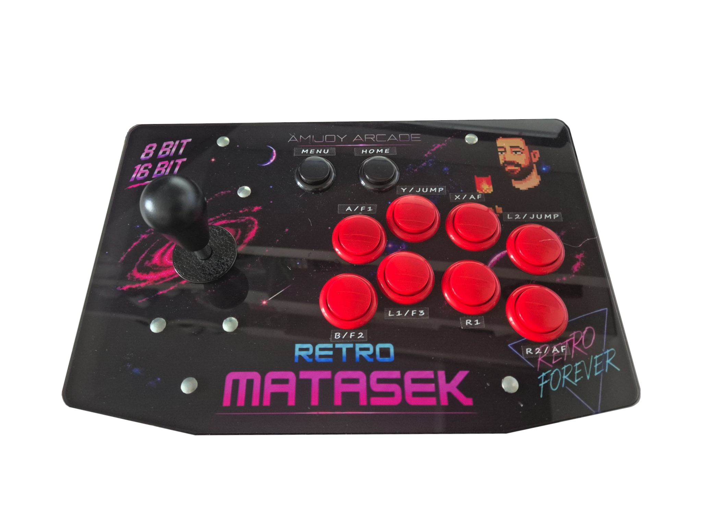

AmiJoy Arcade to zaawansowany, uniwersalny kontroler retro stworzony z myślą o miłośnikach klasycznego gamingu. Nie jest to masowy produkt z taśmy montażowej ani dzieło wielkiej korporacji. To w 100% projekt fanowski, który narodził się z czystej, bezkompromisowej pasji do elektronicznej rozrywki i kultury retro. Głównym celem przy jego projektowaniu było stworzenie absolutnie wszechstronnego urządzenia. Takiego, który stanie się pomostem łączącym dwa zupełnie różne światy – magię klasycznych maszyn z nowoczesną technologią.
Projektując ten kontroler, staraliśmy się podejść do tematu bezkompromisowo. Zamiast szukać najtańszych zamienników, postawiliśmy na wyselekcjonowane i sprawdzone podzespoły. Każdy element został dobrany tak, aby zapewnić doskonałą precyzję, świetne wyczucie ruchów oraz maksymalną przyjemność z każdej minuty spędzonej przy grze.
Ten projekt powstał we współpracy z kanałem Retro Matasek, który odpowiada za design (oprawę graficzną), testy urządzenia oraz konsultacje techniczne.

Jeśli jesteś zainteresowany zakupem, proszę o wypełnienie powyższego formularza.
Cena kontrolera Amijoy Arcade wynosi xxx zł z wysyłką Pocztą Polską za pobraniem.
Po przesłaniu wiadomości skontaktuję się z Tobą w celu potwierdzenia dostępności, czasu realizacji oraz szczegółów dotyczących dostawy.
Proszę o inforamcję o tym czy kontroler ma być wyposażony w przyssawki czy tylko w gumowe podkładki.
W razie pytań możesz skontaktować się ze mną bezpośrednio:
Zachęcam do kontaktu – odpowiem na wszystkie zgłoszenia jak najszybciej!
Jeden kontroler, nieskończone możliwości
Amijoy Arcade został stworzony po to, abyś nie musiał żonglować różnymi kontrolerami na biurku. Jego unikalna konstrukcja pozwala na współpracę z ogromną paletą urządzeń:
Wkrótce znajdziesz tutaj krótkie filmy instruktażowe, które krok po kroku wyjaśnią działanie wszystkich funkcji i trybów kontrolera.